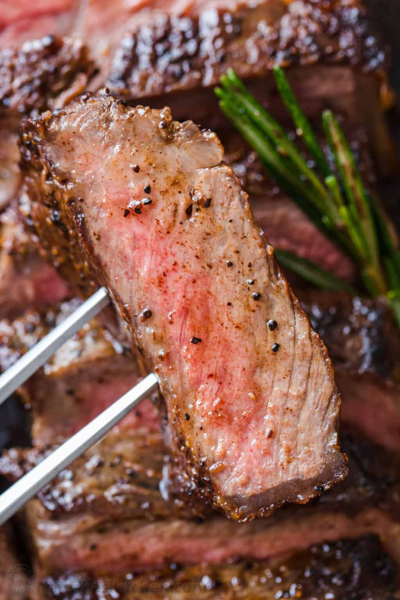

<!DOCTYPE html>
<html lang="en">

</div>
</body>
  
  </html>

  
<head>

  <title>Design Project:</title>
  <meta name="description" content="An html basic: Boilerplate" >
  <meta name="Author" content="Sierra Yu">
  
  <link rel="stylesheet" href="style.css">
  

<meta name="viewport" content="width=device-width, initial-scale=1">

</head>

<header>

  <h1 class="header">
    <span style="font-size:30px;cursor:pointer" onclick="openNav()">&#9776; 
   
  </h1>
<h1 class="search">SimplerFood

</h1>
<h1 class="title"><input type="text" id="myInput" onkeyup="myFunction()" placeholder="Search "></h1>


</header> 


<body>

<div id="mySidenav" class="sidenav">
  <a href="javascript:void(0)" class="closebtn" onclick="closeNav()">&times;</a>
  <a href="index.html">Home</a>
  <a href="Recipes.html">Recipes</a>
  <a href="How-To.html">How-To</a>
  
</div>


<script>
function openNav() {
  document.getElementById("mySidenav").style.width = "250px";
}

function closeNav() {
  document.getElementById("mySidenav").style.width = "0";
}
</script>
</span></div>

<h2>Pan Seared Steak</h2>

<h4 class="how-to1">How to Pan Sear Steaks:</h4>

<h5 class="how-to">
 1. Pat dry – use paper towels to pat the steaks dry to get a perfect sear and reduce oil splatter.
 <br><br>  2. Season generously – just before cooking steaks, sprinkle both sides liberally with salt and pepper.
 <br><br>3. Preheat the pan on medium and brush with oil. Using just 1/2 Tbsp oil reduces splatter.
 <br><br>4. Sear steaks – add steaks and sear each side 3-4 minutes until a brown crust has formed then 
 <br> use tongs to turn steaks on their sides and sear edges (1 min per edge).
 <br><br>5. Add butter and aromatics – melt in butter with quartered garlic cloves and rosemary sprigs. Tilt pan
 <br> to spoon garlic butter over steaks and cook to your desired doneness (see chart below).
 <br><br>6. Remove steak and rest 10 minutes before slicing against the grain. 
  </h5>

  <div class="steak">
    
  </div>

  
  <div class="steak1">
    
  </div>

  <h4 class="ingredients2">  Ingredients</h4>

  <h5 class="ingredients">
  
- 2 lbs New York Strip Steaks (2 steaks), or Ribeye or Top Sirloin Steaks (1 lb each steak, 1 1/4” thick)
 <br><br> - 1/2 Tbsp vegetable oil, or any high heat cooking oil like canola or extra light olive oil
 <br><br>- 1 1/2 tsp sea salt
 <br><br>- 1 tsp black pepper, freshly ground
 <br><br>- 2 Tbsp unsalted butter
 <br><br>- 2 cloves garlic, peeled and quartered
 <br><br>- 1 sprig fresh rosemary
  </h5>

  
  <h2 class="footer"></h2>

  <h5 class="arrow1"> p.1 </h5>
  <h5 class="arrow2"> next > </h5>

</body>
</html> 